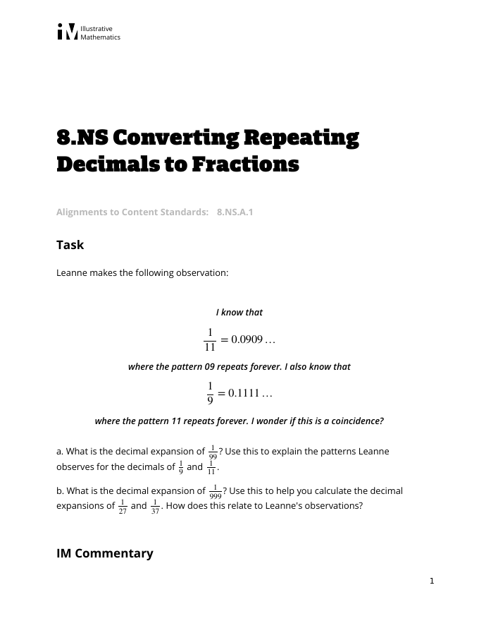
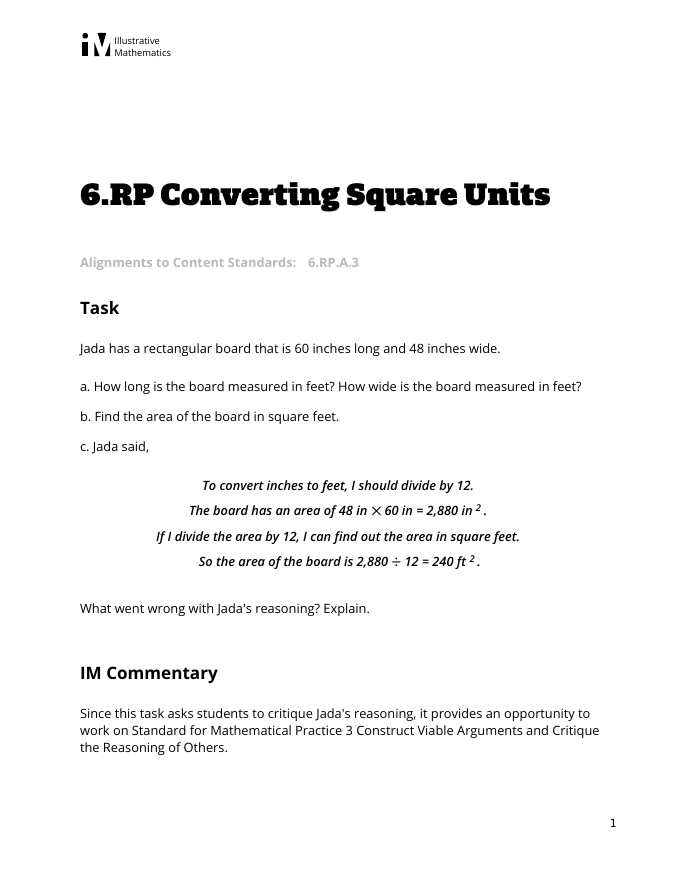

Converting fractions and decimals pa_converting_fractions_and_decimals
- skill close
- given find close
- range close
- variance close
- graphic off
- hard same topic close
No OpenStax section exercise was this skill, so these Illustrative Mathematics tasks are the comparison set. The skill lines up with 8.NS.A.1 Converting Repeating Decimals to Fractions; 6.RP.A.3 Converting Square Units: both are about converting fractions and decimals. Published easy stem: “Illustrative Mathematics 8.NS Converting Repeating Decimals to Fractions Alignments to Content Standards: 8.NS.A.1 Task Leanne makes the following observation:…” Generated easy stem: “\text{Convert.} \text{Write } \frac{7}{10} \text{ as a decimal.}” The published items are separate tasks, so there is no numbered easy/medium/hard range to match. Generated numbers go from about 10 on easy to about 25 on hard. Generated stems use 2 templates across six items. The published question is carried by a figure. The generated stem is text only. Hard does not switch to a different method. Extra fractions, negatives, or larger coefficients count as earlier skills, not a new topic.
In topic, not generated: none seen. Generated: the stems do not state a separate given and find.
Illustrative Mathematics task bank · task set, not a numbered ladder · match ok · CC BY-NC-SA 4.0 (Illustrative Mathematics) · consulted 2026-11-19
8.NS.A.1 Converting Repeating Decimals to Fractions; 6.RP.A.3 Converting Square Units
https://tasks.illustrativemathematics.org/content-standards
easy
Published
Illustrative Mathematics 8.NS Converting Repeating Decimals to Fractions Alignments to Content Standards: 8.NS.A.1 Task Leanne makes the following observation: I know that 1 = 0.0909 … 11 where the pattern 09 repeats forever. I also know that 1 = 0.1111 … 9 where the pattern 11 repeats forever. I wonder if this is a coincidence? a. What is the decimal expansion of 1 ? Use this to explain the patterns Leanne 99 observes for the decimals of 1 and 1 . 9 11 b. What is the decimal expansion of 1 ? U…

Generated
medium
Published
No published item in this band.
Generated
hard
Published
Illustrative Mathematics 6.RP Converting Square Units Alignments to Content Standards: 6.RP.A.3 Task Jada has a rectangular board that is 60 inches long and 48 inches wide. a. How long is the board measured in feet? How wide is the board measured in feet? b. Find the area of the board in square feet. c. Jada said, To convert inches to feet, I should divide by 12. The board has an area of 48 in × 60 in = 2,880 in 2 . If I divide the area by 12, I can find out the area in square feet. So the area…



![The equations are x minus y equals minus 1 and 2 x minus y equals minus 5. We substitute x equal to minus 2 and y equal to minus 1 into both equations. So, x minus y equals minus 1 becomes minus 2 minus open parentheses minus 1 close parentheses equal to or not equal to minus 1. Simplifying, we get minus 1 equals minus 1 which is correct. The equation 2 x minus y equals minus 5 becomes 2 times minus 2 minus open parentheses minus 1 close parentheses equal to or not equal to minus 5. Simplifying, we get minus 3 not equal to minus 5. Hence, the ordered pair minus 2, minus 1 does not make both equations true. So, it is not a solution.](assets/img/remote/b47fe435f36c4378.webp)